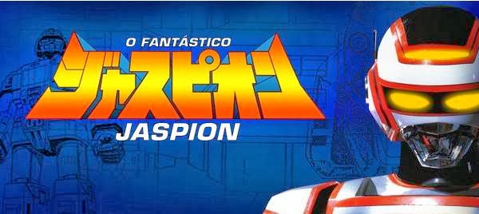

Kyojuu Tokusou Juspion (巨獣特捜ジャスピオン, Kyojū Tokusō Jasupion; traduzido como Juspion e a Investigação Especial de Criaturas Gigantes, e lançado no Brasil sob o título de O Fantástico Jaspion) é uma série de televisão japonesa do gênero tokusatsu, pertencente à franquia Metal Hero. Produzida pela Toei Company e exibida originalmente entre 15 de março de 1985 e 24 de março de 1986 pela TV Asahi, totalizando 46 episódios. Foi estrelada pelo ator e dublê Hikaru Kurosaki no papel título. Segundo o produtor Susumu Yoshikawa, o nome original "Juspion" é uma amálgama das palavras "Justice" e "Champion" (Campeão da Justiça).
No Brasil, a série foi um sucesso gigantesco e até então inédito por outras produções do gênero até então exibidas (tais como National Kid e Ultraman), desencadeando uma febre épica jamais vista pelo gênero de super-heróis japoneses no país e abrindo as portas para a importação de novas séries do gênero tokusatsu. Sua audiência superava, à época, a da Rede Globo (que contava com programas como o Xou da Xuxa, líder absoluto até então), chegando a atingir 15 pontos de audiência, um dos maiores índices da história da Rede Manchete.
Há milhares de anos num planeta nos confins da galáxia a muitos anos-luz de distância da Terra se reuniam os grandes profetas da Via Láctea onde difundiam os ensinamentos e profecias da Bíblia Galática. A Bíblia Galática era uma grande placa de pedra transcrita pelo Deus Universal, onde em suas escrituras profetizava o surgimento de um demônio espacial nascido da união das energias negativas do universo denominado por Satan Goss que quando se fortalecer enfurecerá todos os monstros gigantes e assim provocará o apocalipse da Via Láctea, também conta a forma necessária para destruí-lo. Só que esse planeta foi atingido por um cometa e completamente destruído; a Bíblia Galática também foi quebrada em vários pedaços que foram espalhados por toda a galáxia.
Anos depois, Edin, cientista e o último sobrevivente dos grande profetas galácticos, passou a procurar os fragmentos da Bíblia Galática em seu planeta natal, até que encontra um garoto humano que sobreviveu à queda de uma nave espacial em seu planeta, acidente no qual seus pais morreram. Acreditando nas profecias da Bíblia Galáctica, a qual preceituava que um guerreiro celestial salvaria a galáxia e o universo das forças do temível Satan Goss. Edin crê ser este o garoto predestinado a se tornar o lendário guerreiro. Ele adota o menino e o cria sozinho, dando-lhe o nome de Jaspion, na esperança de que, algum dia, o garoto venha a combater as ameaças do temível Satan Goss e impedir a exterminação galática.
Anos mais tarde, já adolescente, Jaspion aprende sobre seu destino, e aceita de seu pai adotivo os equipamentos que ele construiu para auxiliá-lo. Entre os artefatos, estão a armadura Metal Tech, feita do metal mais resistente do universo (metal Ejinium), equipada com o Turbo Magnum, um revolver laser e com a Espadium Laser, uma poderosa espada laser que se materializa na palma de sua mão; a androide Anri, que passa a auxiliá-lo em sua jornada; a Allan Moto Space, uma super moto que além de ser perfeita sobre a terra tem a capacidade de voar; Gaibin, um extraordinário veículo hibrido voador-terrestre que pode se dividir em dois, um jato para combates aéreos e um tanque com a capacidade de perfurar o solo permitindo acesso aos locais mais subterrâneos e a nave espacial Daileon, que tem a habilidade de transformar-se num poderoso robô gigante. Sua missão é impedir os projetos maléficos de Satan Goss e dos seus seguidores e subordinados. Enquanto seu pai adotivo procura constantemente os fragmentos da Bíblia Galática para saber a forma de poder matar Satan Goss.
Após algumas aventuras em planetas desconhecidos, num deles, o planeta Beezee resgata a alienígena Miya, que é adotada e passa a acompanhá-los. Depois de um tempo passando de planeta em planeta o heróis percebe as terríveis consequências provocadas pela influência dos poderes malignos de Satan Goss em todos os planetas da Via Láctea, até que Edin telepaticamente passa as informações para Jaspion de que Satan Goss está visando construir o seu Império dos monstros no terceiro planeta do sistema solar, conhecido por toda a galáxia como "O Planeta dos Monstros", o planeta Terra, fazendo assim o herói se dirigir à Terra, onde conhece MacGaren, que se intitula filho de Satan Goss e torna-se o maior rival do herói. A partir daí Jaspion passa a interromper as tramas e investidas de MacGaren para a dominação e conquista ou de extermínio do planeta Terra, tornando-se uma pedra no sapato dos planos de Satan Goss, muitos desses planos consistiam na manipulação das habilidades especiais de alguns monstros; no entanto, sempre era interrompido por Jaspion que desvendava as tramoias e matava o monstro envolvido com o Gigante Guerreiro Daileon, por causa disso MacGaren passou a traçar planos para destruir Jaspion e começou a convocar diversos mercenários espaciais muitos que já trabalhavam para Satan Goss na dominação de outros planetas, mercenários como o quarteto Quadridemos, Irmãos Gasami, Assassino Espacial Guila, a feiticeira Titânia, Aigaman com seu monstro-robô Aiga, Bruxa Galalítica Kilza, Rainha Espectro da Treva Galática Kilmaza e seus ninjas espaciais.